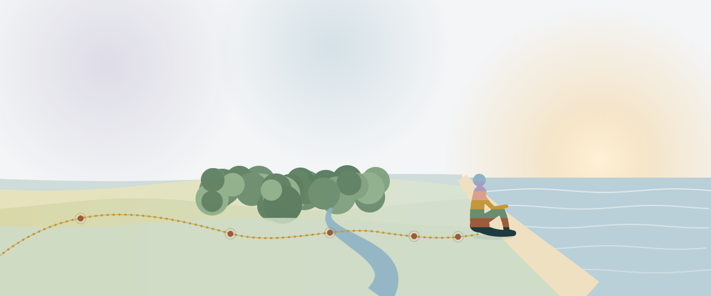

Em primeira pessoa
Minha Jornada
Não cheguei ao estudo do corpo pelos livros. Cheguei pela experiência acumulada de um corpo que sempre soube mais do que eu conseguia explicar.

Vera Rosendo
Administradora, aposentada após 26 anos de serviço público. Pós-graduada em Psicologia Corporal, estudiosa de psicanálise clínica e de cidades inteligentes. Filha, mãe, avó, migrante do Brasil profundo. Entusiasta do trabalho corporal: acredito que o corpo registra, no plano fisiológico e emocional, muito mais do que a consciência percebe, e que esse registro pode ser reconhecido, escutado e transformado. Criadora deste site, que é também um modo de organizar tudo que fui aprendendo, vivendo e sentindo.
Parte I
O corpo que percebe antes
Há décadas, percebo que o corpo sabe de coisas antes da mente confirmar.
Trabalhando como auxiliar de enfermagem, bastava entrar numa ala para que algo em mim se organizasse sozinho, antes de qualquer prontuário: aquele leito, infecção por fungo. O outro, algo nos rins. Mais além, um cheiro que aprendi a reconhecer como câncer, e o diabetes, com seu odor quase doce, que a maioria das pessoas nem nota.
Guardei essas percepções para mim durante anos, com receio de que fossem lidas como esquisitice. O paladar seguiu o mesmo caminho: numa degustação informal de café, identifiquei um sabor de oliva num grão que um pesquisador da área elogiou como sinal de paladar sensível.
Mais recentemente, deitada numa cama de hospital, um socorrista cético sobre eu conseguir sentir minhas próprias extrassístoles fez um teste, virando o monitor de costas para mim. Apontei o momento exato em que sentia algo estranho no peito, todas as vezes. Ele, que segundos antes duvidava, ficou visivelmente surpreso.
Não foram episódios soltos. Foi sempre a mesma coisa: o corpo sabendo de algo antes de qualquer confirmação externa.
Não estava sozinha.
Joy Milne é uma enfermeira escocesa aposentada que possui hiperosmia hereditária: uma hipersensibilidade olfativa que lhe permite detectar cheiros sutis demais para a maioria das pessoas perceber. Cerca de quinze anos antes de seu marido ser diagnosticado com Parkinson, ela notou que o cheiro dele havia mudado. Durante seus anos como enfermeira, percebeu que pessoas com doenças diferentes exalavam odores distintos. Por décadas, não conectou formalmente as duas coisas.
Em 2012, pesquisadores da Universidade de Edimburgo testaram sua afirmação: pediram que ela cheirasse doze camisetas, seis de pacientes com Parkinson e seis de pessoas saudáveis. Ela identificou corretamente todos os casos. A única "falha" foi classificar como positiva a camiseta de alguém do grupo saudável. Esse mesmo homem foi diagnosticado com Parkinson menos de um ano depois. Joy foi listada como co-autora do estudo publicado no ACS Central Science em 2019. A pesquisa identificou os compostos que ela detectava no sebo da pele dos pacientes e levou ao desenvolvimento de um teste de diagnóstico com cerca de 95% de precisão.
O mecanismo por trás disso tem nome: compostos orgânicos voláteis (VOCs). As doenças alteram o metabolismo e produzem substâncias específicas que o organismo libera pela pele, hálito, suor e urina. O diabetes produz um cheiro frutado pela presença de cetonas. Infecções fúngicas têm VOCs próprios. O câncer está associado ao aumento de poliaminas, que têm odor característico. Isso não é intuição mística. É química.
Já a percepção das próprias extrassístoles tem um campo científico dedicado: a interocepção. A interocepção é o processo pelo qual o sistema nervoso capta, interpreta e integra sinais originados dentro do corpo, incluindo batimentos cardíacos, pressão arterial, estados viscerais. Sinais subconscientes internos podem ascender à consciência, e esse processo pode melhorar com a prática. É um campo em plena atividade: em 2026, por exemplo, pesquisadores da Universidade de Jyväskylä, na Finlândia, identificaram na atividade cerebral um possível marcador da atenção aos batimentos do próprio coração.
Fontes: ACS Central Science (2019), University of Manchester / Universidade de Edimburgo, Psychophysiology (2026), National Geographic, Smithsonian Magazine.
Quando encontrei Wilhelm Reich, muitas coisas fizeram sentido de uma forma diferente. Reich não falava de intuição, de dom ou de sensibilidade especial. Falava de um organismo vivo que percebe, registra e responde ao mundo, antes de qualquer elaboração consciente. Falava de como emoções não elaboradas se instalam nos músculos, na respiração, na postura. Falava de um corpo que guarda o que a mente não conseguiu processar.
Síntese da ideia de Wilhelm Reich
O que percebi durante anos nas enfermarias, no paladar, no peito, não era esquisitice. Era um corpo com sensibilidade expandida para sinais que a maioria das pessoas aprende a ignorar. E se aprende a ignorar, pode aprender, também, a ouvir.
Este site nasceu dessa descoberta. Como partilha de quem foi aprender o que o próprio corpo tinha a dizer.
Continua
Parte II: O que fui encontrar. A chegada ao trabalho corporal e o que ele revelou.
Ler a Parte II